In questa pagina sono analizzati i tabulati radar per stabilire i parametri di volo del DC-9 durante gli ultimi 3m20s di volo, fino all'ultima risposta del transponder e da qui andando avanti per altri 2m55s, fino a quando scompare dal radar anche l’ultimo frammento del DC-9.
INDICE
Parametri di volo prima dell'abbattimento
I seguenti due tracciati mostrano la traiettoria seguita dal DC-9 così come rilevata dai due estrattori riportati nelle figure:
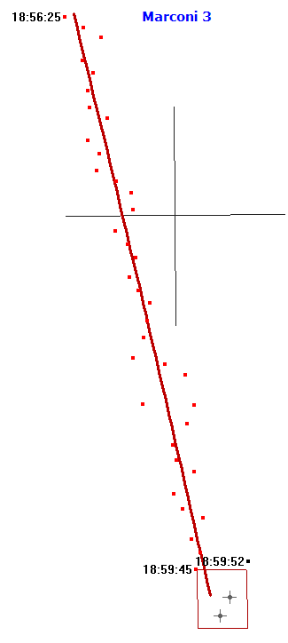
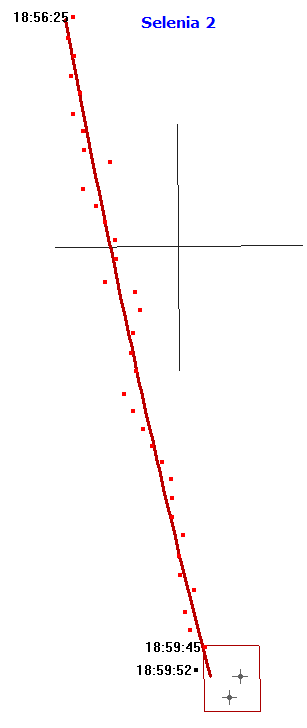
Gli elementi visualizzati sono:
plot ricevuti dai radar primario e secondario (rosso) e dal solo primario (nero);
croce 10 x 10 nm centrata sulle coordinate 40 N, 13 E;
rettangolo rosso che rappresenta l’area di ritrovamento dei relitti sommersi (TITOLO 3 - Le Perizie, pag. 90);
linea rossa per la traiettoria che meglio approssima i plot. Siccome l’intensità del vento è variabile, la linea rossa non è una retta, ma una parabola. L'interpolazione è basata sul contatore ad alta risoluzione presente nei tabulati radar (campo "TEMPO"); ciò consente di misurare il tempo con una risoluzione di 80 ms anziché 1 s. La distanza mostrata dall'interpolazione è 25,8 nm.
UTC
Marconi 3
Selenia 2
RNG [nm]
TRK [°]
GS [kn]
RNG [nm]
TRK [°]
GS [kn]
18:56:25
103,4
166,5
460,9
103,5
169,5
462,8
18:56:45
106,0
166,7
461,5
106,0
169,3
463,2
18:57:05
108,5
166,8
462,2
108,6
169,1
463,5
18:57:25
111,1
166,9
462,8
111,2
168,8
463,8
18:57:45
113,6
167,1
463,4
113,7
168,5
464,1
18:58:05
116,2
167,2
464,0
116,3
168,2
464,4
18:58:25
118,8
167,3
464,6
118,9
167,8
464,8
18:58:45
121,4
167,4
465,2
121,5
167,4
465,1
18:59:05
123,9
167,6
465,8
124,0
167,0
465,5
18:59:25
126,5
167,7
466,4
126,6
166,5
466,0
18:59:45
129,1
167,8
467,0
129,2
166,0
466,4
La tabella è l'equivalente numerico dei due precedenti tracciati e
considera uno sfasamento dei plot di 2,65° W, come spiegato nella pagina "Allineamento radar Ciampino".
Grazie all'interpolazione, è possibile calcolare la rotta istantanea dell'aereo rispetto al nord vero (TRK) e la velocità istantanea rispetto al suolo (GS). La tabella riporta anche la distanza interpolata dell'aereo dal radar (RNG).
In base all'interpolazione ottenuta per l'estrattore 3, il DC-9 sta tenendo una rotta di 167/168° e una velocità al suolo che aumenta procedendo verso sud. Ciò è perfettamente coerente con il fatto che a sud di Roma la velocità del vento diminuisce andando verso sud.
Il radar Selenia appare, invece, poco attendibile, in quanto la rotta al suolo diminuisce di ben 3,5° andando verso sud (anziché aumentare), ma anche lui dà una velocità al suolo in aumento, come il Marconi.
E' utile sottolineare che durante questa fase, il DC-9 vola in senso esattamente radiale rispetto alle antenne dei radar di Ciampino (in particolare, rispetto a quella del Marconi), esponendo, così, quasi la minima superficie riflettente possibile.
Velocità rispetto all'aria e prua
Le colonne TRK rappresentano, come detto, la rotta dell'aereo rispetto al nord vero (non magnetico). La carta aeronautica ONC G-2 del 1981 riporta le isogone per l'anno 1980 (un'isogona è una linea che congiunge i punti sulla superficie terrestre aventi la medesima declinazione magnetica). La zona dell'abbattimento del DC-9 si trova tra l'isogona 1° W e 0°, ma è più vicino all'isogona 0°; si può ritenere, quindi, che la declinazione magnetica fosse poco meno di 0,5° W.
Consultando la pagina "Condizioni meteo", si può avere una stima sufficientemente accurata della velocità e direzione del vento al momento dell'abbattimento: 95,3 kn da 250,5° rispetto al nord vero.
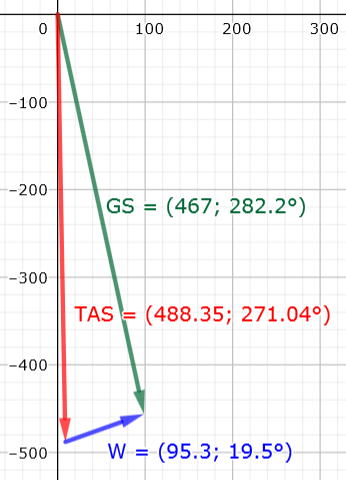
L'immagine mostra come calcolare la velocità tenuta dall'aereo rispetto all'aria (chiamata TAS) tramite il cosiddetto triangolo del vento. Per i calcoli si può usare il sito GeoGebra o la trigonometria di base.
Il vettore verde rappresenta la velocità rispetto al suolo (GS della tabella), quello blu rappresenta il vento, mentre quello rosso è la TAS.
Gli angoli definiti in trigonometria hanno l'origine diversa da quelli usati in aviazione, per cui bisogna fare le necessarie conversioni. Ad esempio, la rotta di 167,8° deve essere convertita in 90 - 167,8 = -77,8° o 282,2°.
Volendo usare la trigonometria elementare, si può procedere scomponendo i vettori nelle loro componenti x e y per poi sommarle (nel nostro caso, l'asse +X rappresenta l'est e l'asse -Y rappresenta il sud):
GSx = 467,0 · cos(-77,8) = 98,69 kn, GSy = 467,0 · sen(-77,8) = -456,45 kn
Per l'angolo formato dal vento, bisogna avere l'accortezza di usare la direzione opposta di 19,5°, cioè 199,5° (il fatto di esprimere la direzione del vento indicando da dove soffia anziché in che direzione va può generare confusione):
Wx = 95,3 · cos(199,5) = -89,83 kn, Wy = 95,3 · sen(199,5) = -31,81 kn.
Sommiamo le componenti x e y per ottenere la velocità rispetto all'aria: TASx = 98,69 - 89,83 = 8,86 kn, TASy = -456,45 - 31,81 = -488,26 kn.
Dal teorema di Pitagora abbiamo: TAS2 = TASx2 + TASy2, da cui TAS = 488,34 kn.
Per la prua, infine, abbiamo: prua = 90 - arctg(TASy / TASx) = 178,96° rispetto al nord vero.
Se dalla prua vera ottenuta dai calcoli sottraiamo la declinazione magnetica (vista in precedenza), otteniamo la prua magnetica: 178,96 - (-0,5) = 179,46° (0,5° W equivalgono a -0,5°).
Quindi l'aereo nella sua ultima fase della crociera aveva sicuramente l'autopilota impostato per mantenere una prua (magnetica) di 180° (cioè esattamente verso sud). Normalmente, durante la crociera non s'imposta una prua, ma si segue una specifica radiale di una radioassistenza, però, siccome la radioassistenza di Ponza aveva solo il DME funzionante, l'IH870 non aveva alcuna guida strumentale, per cui il comandante ha semplicemente impostato la prua a sud, poi c'avrebbe pensato il controllore a dare un'altra prua per far restare l'aereo all'interno dell'aerovia, almeno fino alla stabile ricezione del VOR di Punta Raisi.
Tutto ciò è in ottimo accordo con quanto affermato nella "Consulenza tecnica Bazzocchi ed altri - 18.07.92", pag. 9, dalla quale risulta che gli strumenti recuperati indicavano una prua di 180°. Questo costituisce un ottimo riscontro in merito all'attendibilità delle due interpolazioni relative alla rotta e velocità dell'aereo e alla direzione e velocità del vento.
Come ulteriore elemento di conferma dell'attendibilità di tutte le interpolazioni prima citate, è disponibile il documento "TITOLO 3 - Le Perizie", il quale, a pag. 65, riporta: "Velocità massima di crociera a 25.000ft (7620m.) 488Kts (903km/h)" che è proprio la velocità di crociera (TAS) calcolata in precedenza.
Abbattimento e caduta in mare
L'estrattore 3 del radar Marconi colloca l'ultima risposta del transponder del DC-9 a 17 km a nord del punto CONDOR, 130 km a sud di Ponza, 114 km a nord di Ustica, nonché a 330 km dal punto in cui è stato ritrovato il MiG-23 a Castelsilano.
Segue un’animazione dei plot a velocità normale ottenuta dall’estrattore 3, usato sia per la sua maggiore sensibilità, sia per coerenza con il tracciato presente nella pagina STRAGI80.it - Il tracciato:
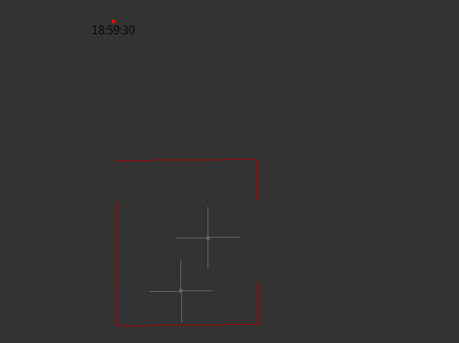
Le due croci centrate sui motori (in basso a sinistra) e sull’FDR sono da 1 x 1 nm e servono per avere un’idea delle distanze.
Ciò che mostra il radar Marconi è un aereo che scompare in un giro d’antenna dopo l’ultima risposta del transponder delle 18:59:45 e al suo posto compare una nuvola di frammenti che ritorna molti echi mentre si muove verso est, sospinta dal fortissimo vento da ovest (un centinaio di nodi). Tra tutti quei plot, alcuni potrebbero essere ritornati dall'aereo ancora strutturalmente integro, ma siccome il transponder non funziona più, non è possibile determinare se e quali plot del radar primario (colore nero) rappresentano l'aereo.
Un tentativo in tal senso è stato fatto dal professor Galati e dagli ingegneri Giaccari e Pardini (questi ultimi due dipendenti della Selenia SpA) con la loro dettagliatissima relazione.
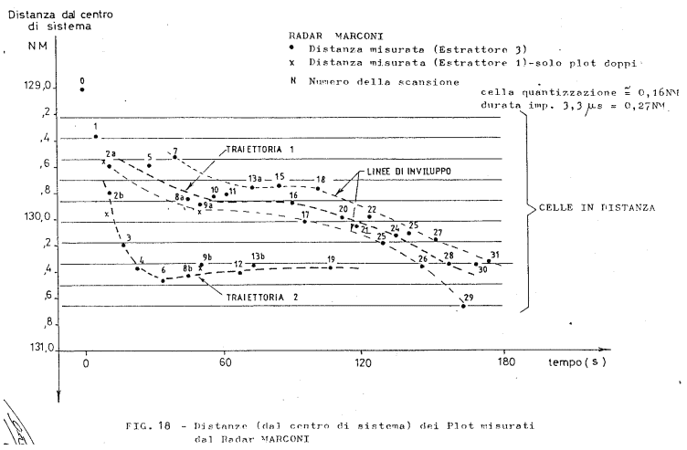
Questo grafico, pubblicato a pag. 13 del PDF, riporta la distanza dei plot dall'antenna del radar Marconi in funzione del tempo. L'istante iniziale corrisponde alle 18:59:45.
Nel grafico vengono individuate due traiettorie. Al punto k a pag. 25, gli autori scrivono: "[...] l’associazione più probabile tra traiettorie e oggetti, appare attribuire la traiettoria 2 alla parte principale del relitto del DC9 I-Tigi e la traiettoria 1 a suoi frammenti. [...]".
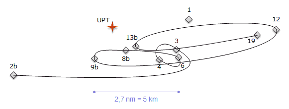
Dando una collocazione spaziale (latitudine e longitudine) ai punti individuati nella fig. 18 della relazione, è possibile disegnare una traiettoria che passa per quei punti.
Il numero delle possibili traiettorie è infinito; il disegno ne mostra una (UPT: ultimo punto transponder).
Gli autori della relazione, molto opportunamente, aggiungono, sempre al punto k: "[...] Tale attribuzione richiede una convalida in base a valutazioni di carattere aeronautico analisi del relitto etc., [...]". Una "convalida aeronautica" è d'obbligo; infatti, una semplice verifica rende subito impossibile il fatto che l'aereo abbia potuto seguire la traiettoria 2.
Consideriamo, ad esempio, i primi due punti indicati nella fig. 18: il 2b e il 3. La distanza tra quei due punti è 5,2 nm. Il radar Marconi riceve il plot 2b alle 18:59:57 e il plot 3 alle 19:00:02 (estrattore 3), ciò significa che il DC-9 avrebbe impiegato 5 s per andare dal 2b al 3. Se il percorso fosse stato in linea retta, la velocità sarebbe stata pari a 5,2 / 5 x 3600 = 3744 kn = 6934 km/h (!). Se il percorso non fosse stato in linea retta, è chiaro che la velocità avrebbe dovuto essere ancora più grande.
Analogo calcolo può essere fatto per i punti 9b e 12. Distanza = 5,83 nm, 9b: 19:00:36, 12: 19:00:52, tempo = 16 s, velocità = 5,83 / 16 x 3600 = 1312 kn = 2167 km/h; del tutto impossibile anche in questo caso.
Tuttavia, sappiamo bene che le coordinate polari (distanza e azimut) relative ai bersagli rilevati dai radar sono soggette ad errori di vario tipo.
Siccome la distanza tra i punti 2b e 3 è troppo alta per essere percorsa da un qualunque velivolo in soli 5 s, si può prendere in considerazione l'errore azimutale del radar per avvicinare i due punti, riducendo, così, la velocità necessaria per andare da un punto all'altro in quei 5 s.
Sfruttando il risultato ottenuto dall'analisi riportata nella pagina "Caduta in mare", abbiamo che l'incertezza azimutale del radar Marconi alla distanza di circa 130 nm è pari a ±0,8° con una confidenza del 99,7%.
Per verificare, quindi, la plausibilità dell'ipotesi che il DC-9 (o ciò che ne è rimasto) possa aver seguito il percorso dal punto 2b al punto 3, si può ruotare il punto 2b di 0,8° in senso antiorario per avvicinarlo al punto 3 e il punto 3 in senso orario per avvicinarlo al punto 2b. Fatti tutti i calcoli, la distanza passa da 5,2 nm a 1,6 nm.
Sfruttando, inoltre, il temporizzatore ad alta risoluzione (campo "TEMPO" nei tabulati), si ha che la distanza temporale tra i punti 2b e 3 è di 5,6 s (1 giro d'antenna).
Calcolando, finalmente, la velocità necessaria per andare dal punto 2b al punto 3 in linea retta, otteniamo: 1,6 / 5,6 x 3600 = 1029 kn = 1905 km/h, una velocità ancora estremamente elevata per essere possibile.
Si può, quindi, concludere che il DC-9 certamente non ha seguito una traiettoria passante per quei punti.
Informazioni più utili possono essere ottenute dall'azimut dei plot in funzione del tempo (la figura del link mostra l'osservatore, che nel nostro caso rappresenta l'antenna del radar e la stella che rappresenta l'aereo o l'oggetto che ritorna l'eco).
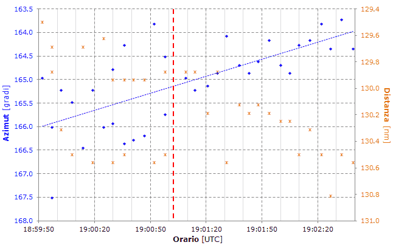
Il grafico è simile a quello della fig. 18, ma qui viene riportato anche l'azimut dei plot.
La linea tratteggiata blu è quella che meglio approssima l'evoluzione dell'azimut in funzione del tempo.
Risulta chiaramente che a sinistra della linea tratteggiata rossa, l'azimut è molto disperso intorno alla linea blu, mentre a destra della linea verticale rossa, l'azimut ha una dispersione significativamente inferiore.
L'analisi del grafico richiede l'introduzione del coefficiente balistico (CB). Gli oggetti con CB elevato cadono più velocemente, poiché sono frenati dall'aria in misura minore degli oggetti con CB inferiore.
Risulta evidente, quindi, che fino alle 19:01 circa, il radar potrebbe ancora mostrare il DC-9 che sta ancora in aria, insieme a molti frammenti di fusoliera o altri oggetti (plot dal n° 1 al 13 e 13b, entrambi battuti alle 19:00:58), mentre dopo delle 19:01 (cioè a partire dal plot n° 15 battuto alle 19:01:09), l'aereo e gli altri oggetti con CB elevato non sono più visibili (perché a quota troppo bassa o già precipitati in mare) e rimangono solo i frammenti con CB molto piccolo che vengono sospinti verso est dal fortissimo vento in quota.
Identificazione dei plot
In questo paragrafo si cercherà di stabilire quali plot sono compatibili con i frammenti del DC-9 e quali, invece, devono essere ritenuti plot spuri (falsi plot derivanti da disturbi al radar) o appartenenti ad altri aerei presenti in zona.
Il programma che elabora i plot calcola l'intervallo di tolleranza che "assicura" con una confidenza del 95% la copertura di circa il 98,65% degli errori in azimut del radar. Quel 98,65% si ottiene dal rapporto 36,5 / 37; siccome i campioni sono 37 (v. il grafico degli errori in azimut nella pagina "Caduta in mare"), la copertura del 98,648648...% consente di poter ritenere con una "sicurezza" del 95% che nemmeno 1 plot cade al di fuori dell'intervallo calcolato.
Chi volesse fare qualche prova, può usare la pagina Tolerance Intervals for Normal Distribution, scrivendo i seguenti valori nelle caselle, partendo dall'alto: 37, 0, .2668, 95, 98.648648. I valori presenti nelle due caselle "lies within the interval from" rappresentano i gradi a destra e a sinistra del plot in cui questo potrebbe in realtà trovarsi a causa dell'errore azimutale del radar Marconi. Quindi l'intervallo è ampio 0,8307 x 2 = 1,66°, corrispondenti a poco meno di 7 km, alla distanza dei plot dal radar.
Ciò che segue si basa su quanto dimostrato nelle pagine "La lunga planata" e
"Caduta in mare" e cioè che il DC-9, dopo aver perso il troncone della semiala sinistra, ha iniziato a perdere quota velocemente mantenendo quasi costante la rotta finale, impattando la superficie del mare nei pressi della zona di ritrovamento dei motori.
Una volta avvenuto l'evento catastrofico, il DC-9 ha iniziato subito a perdere pezzi. Questi frammenti hanno subìto la forza del vento da ovest che li ha sospinti verso est accelerandoli nella direzione del vento tanto più velocemente quanto più piccolo era il CB del frammento. Ad esempio, un cuscino di gommapiuma viene accelerato dal vento molto di più del carrello portavivande del DC-9.
La massima velocità orizzontale nella direzione del vento di un frammento rispetto al suolo è ovviamente pari alla velocità del vento. Frammenti con CB molto piccolo vengono accelerati dal vento molto velocemente, raggiungendo altrettanto velocemente una velocità rispetto al suolo pari a quella del vento. Viceversa, frammenti con CB molto grande vengono accelerati lentamente dal vento e potrebbero non raggiungere mai la sua velocità prima d'impattare il mare.
L'analisi qui presentata si basa proprio su questo fatto e può essere così riassunta:
un plot "troppo" ad est rispetto a dove dovrebbe trovarsi un frammento solo sospinto dal vento non può essere un frammento del DC-9, può, invece, essere o un aereo o un falso plot, uno dei tanti falsi plot che si trovano in quella fascia di distanza dal radar (si vedano le due immagini alla fine della pagina "Abbattimento tramite missili inerti");
un plot compreso tra la rotta del DC-9 e il punto in cui dovrebbe trovarsi un frammento del DC-9 e non troppo ad ovest di questo punto può senz'altro rappresentare un frammento avente un CB medio-alto;
un plot "troppo" ad ovest rispetto alla rotta del DC-9 non può essere un frammento del DC-9, poiché il vento traslerebbe il frammento verso est, non verso ovest.
Le frasi "troppo ad est" e "troppo ad ovest" sono tecnicamente prive di senso, quindi quel "troppo" deve essere quantificato numericamente. Per farlo, si può sfruttare l'analisi presentata nella pagina "Caduta in mare" in merito all'incertezza sull'azimut dei plot rilevati dal radar Marconi, dalla quale risulta una deviazione standard degli scarti pari a σ = 0,2668°. Questo primo dato tornerà utile in seguito.
Osservando la seguente cartina, si nota che i plot iniziano a comparire più a sud del punto rosso "UPT" che rappresenta l'ultima risposta del transponder (UPT, ultimo punto transponder) dell'IH870. Infatti iniziano a comparire all'altezza del punto rosso più grande "UPT + 3 s".
La cartina ha la particolarità di essere ruotata di 18° in senso orario (lo si nota riducendo la scala con la rotellina del mouse) con lo scopo di poter ragionare meglio sulla sequenzialità dei plot (la cartina può essere ruotata muovendo il mouse a destra e a sinistra mentre si tiene premuto il tasto destro). La griglia è infatti allineata con la direzione media del vento presente tra 22000 e 26000 ft di quota (freccia verde), pari a 252° rispetto al nord vero (non magnetico). La velocità media del vento è pari a 90,8 kn. Si tenga presente che i plot 9b e 26 sono esattamente sovrapposti.
Scegliere un plot:
Mostra plot (v. fine tabella):
frammenti o falsi plot o aerei
incompatibili con frammenti
dubbi
La linea rossa rappresenta la rotta (interpolata) seguita dall'IH870 negli ultimi secondi di volo.
La griglia è centrata sul punto lungo la rotta dell'IH870 al tempo UPT + 3 s, momento in cui sembra avvenuto l'evento catastrofico (a giudicare dalla comparsa dei frammenti). La scala dell'asse X è graduata in giri d'antenna ovvero 1 divisione è ampia 90,8 / 3600 x 5,57 = 0,14 nm (5,57 s è il periodo medio di rotazione dell'antenna del radar Marconi), mentre 1 divisione dell'asse Y è ampia il doppio dell'incertezza sulla distanza di un plot dal radar al 99,7% di confidenza e cioè 0,12 nm (questo per evitare che la griglia sia eccessivamente fitta).
La freccia verde rappresenta la direzione media del vento tra 22000 e 26000 ft al momento del disastro.
Il segmento blu rappresenta l'intervallo di tolleranza già descritto ad inizio paragrafo.
La cartina può essere usata come segue.
Partendo dal punto in cui è avvenuto il disastro e sapendo che 1 giro d'antenna dura in media 5,57 s, il frammento numero N può al massimo arrivare ad una distanza nella direzione del vento espressa in miglia nautiche pari a 90,8 / 3600 x N x 5,57. Ad esempio, il plot 12, per rappresentare un frammento del DC-9 può al massimo trovarsi a 90,8 / 3600 x 12 x 5,57 = 1,69 nm dalla linea verticale più a sinistra. Lo stesso calcolo, leggermente più accurato, può essere fatto sostituendo a 12 x 5,57 il reale tempo trascorso dall'abbattimento, cioè 63,8 s. Il plot si trova, invece, oltre 3 nm più ad est della massima distanza possibile per un frammento del DC-9 sospinto dal vento alla velocità media di 90,8 kn e rilevato 63,8 s dopo dell'abbattimento.
Quella distanza di 3 nm da sola non basta per determinare se quel plot è un frammento o altro, in quanto il radar riporta l'azimut con un certo errore, per cui una distanza di 3 nm potrebbe rientrare nel normale errore in azimut.
Una prima indicazione la dà il segmento blu centrato sul plot selezionato. Infatti, continuando con l'esempio del plot 12, muovendo il puntatore del mouse sulla griglia, apparirà l'etichetta con "N: 12" che è la linea verticale lungo la quale può al massimo arrivare dopo 63,84 s un frammento che si stacca dal DC-9 mentre questo precipita lungo la linea verticale più marcata "X: 0.00". La distanza tra la linea verticale "N: 12" e l'estremo più a sinistra del segmento blu relativo al plot 12 è molto grande. Questo significa che per affermare che il plot 12 rappresenti un frammento del DC-9, dovremmo anche accettare un errore azimutale enorme del radar. Quanto enorme? Ce lo dice la seguente tabella. Per quel plot, la colonna Δazm riporta 1,337 e la colonna C riporta 0,000141; ciò significa che la distanza azimutale tra il plot 12 e la linea verticale "N: 12" è 1,337°. Ampliare l'errore azimutale fino a 1,337° significa portare la confidenza dal 95% al 100 - 0,000141 = 99,999859%.
Il valore nella colonna C indica la confidenza che si ha nel ritenere che il plot possa appartenere ad un frammento del DC-9.
Valori piccoli di C tendono ad indicare plot incompatibili con frammenti del DC-9, mentre valori elevati indicano una sempre maggiore compatibilità del plot con un frammento.
Normalmente, s'inizia ad avere una sufficiente evidenza statistica per valori inferiori al 10% o superiori al 90%, ma per avere una solida evidenza statistica sulla caratterizzazione dei plot, conviene considerare soglie del 5% e 95%:
C < 5% → plot incompatibile con un frammento del DC-9, può essere o un falso plot o un aereo;
C > 95% → plot compatibile con un frammento del DC-9, può essere un frammento o un falso plot o un aereo;
5% ≤ C ≤ 95% → plot dubbio, non esiste sufficiente evidenza statistica per farlo rientrare in una categoria ben definibile.
La tabella riepiloga i plot battuti dal radar Marconi (estrattore 3) a partire da UPT (cliccando in un punto qualunque di una riga, viene selezionato il plot corrispondente anche nella cartina). Si fa notare che i plot 9b e 26 sono esattamente sovrapposti.
ID: identificativo o nome del plot. UTC: orario riportato nel tabulato dell'estrattore n° 3. tec: tempo trascorso dall'evento catastrofico (usato il campo "TEMPO" dei tabulati con risoluzione di 80 ms o 8 centesimi di secondo). DST: distanza in miglia nautiche del plot dall'antenna. AZM: azimut del plot rilevato dal radar Marconi corretto per lo sfasamento (v. pagina "Allineamento radar Marconi e Selenia"). Lat e Lon: coordinate del plot. Δazm: differenza tra l'azimut atteso per il plot e l'azimut rilevato dal radar (valori positivi indicano plot più ad est del punto atteso). C: confidenza percentuale che si ha nell'affermare che il plot è compatibile con un frammento del DC-9.
Valori come 0 e 100% non esistono in statistica inferenziale, ma nella tabella compaiono ugualmente vari "100" solo per effetto dell'arrotondamento a 3 cifre significative. Ad esempio, C per il plot 28 è 99,9999999994387.
Il numero 6,82·10-8 equivale a 0,0000000682.
Dopo aver visto l'esempio del plot 12, vediamo un altro esempio con Δazm negativo: il plot 7.
In base alla classificazione vista prima, possiamo dedurre che questo plot non è "sospetto", nel senso che può rappresentare indifferentemente un frammento, un aereo o un falso plot. Vediamo, infatti, che la linea verticale "N: 7" rientra ampiamente nell'intervallo di confidenza per quel plot, tanto da poter ritenere che l'oggetto rappresentato da quel plot possa trovarsi indifferentemente a destra o a sinistra della rotta del DC-9.
Vediamo come ultimo esempio il plot 4. Questo è più ad est della linea in cui ci si aspetterebbe di trovare un frammento sospinto dal vento dopo 19,24 s, ma la differenza tra la posizione attesa e quella battuta dal radar è talmente piccola che il plot si discosta soltanto di 0,165° dalla posizione attesa, fatto evidenziato da C pari a "100". In altri termini, l'incertezza sull'azimut ci consente di ritenere senz'altro possibile che la posizione reale del plot sia compresa tra la rotta del DC-9 e la linea "N: 4". Può essere utile precisare che se il frammento rappresentato dal plot 4 fosse realmente in quella posizione (errore in azimut pari a zero), quel plot non sarebbe in alcun modo attribuibile ad un frammento del DC-9.
Abbiamo, finalmente, tutti gli elementi necessari per caratterizzare i plot.
Plot che possono rappresentare indifferentemente un frammento, un aereo o un falso plot: 2a, 3, 4, 6, 7, 8a, 15, 16, 17, 18, 20, 21, 22, 23, 24, 25, 26, 27, 28, 29, 30, 31.
Si noti che l'elenco è in ottimo accordo con quanto risulta già evidente dal grafico "Azimut / Distanza" del paragrafo precedente, cioè che i plot dal 15 in poi sono in gran parte frammenti con CB abbastanza piccolo che quindi vengono sospinti molto ad est dal vento restando in quota per parecchio tempo.
Plot incompatibili con frammenti, attribuibili con alta probabilità a falsi plot o altri aerei: 1, 2b, 5, 9b, 9a, 10, 11, 12.
Plot dubbi: 8b, 13b, 13a, 19. La confidenza nel ritenere il plot 13b un frammento è comunque molto alta.
Escludendo con l'apposita casella di spunta di fianco alla cartina i plot "frammenti o falsi plot o aerei" (facendo colorare di grigio chiaro i corrispondenti puntini, così da mettere in risalto gli altri due tipi di plot rimasti neri), nei restanti plot si potrebbero intravedere due traiettorie rappresentanti apparentemente una rotta, ma in realtà non sembra possibile collegare la spaziatura temporale dei plot con la loro spaziatura geografica, in quanto alcuni calcoli dànno velocità di un ipotetico aereo che interseca la rotta del DC-9 dai 130 kn ai 360 kn; poco probabili, considerando anche il forte vento da ovest.
Questo, ovviamente, non significa che alcuni dei plot incompatibili con i frammenti non possano rappresentare altri aerei, anzi, sarebbe quasi impossibile che questi plot fossero realmente tutti falsi plot, in particolare i quattro ad ovest della rotta del DC-9.
A conclusione del paragrafo, seguono una cartina e un grafico che consentono di osservare il comportamento dei frammenti in base al loro CB.
Contrariamente a quanto fatto per la griglia presente nelle cartine (costruita in base alla direzione e velocità medie del vento), la posizione dei frammenti viene calcolata usando il modello matematico delle condizioni meteo presenti in una data posizione e in un dato orario (viene usata una simulazione simile a quella fatta per la caduta dei motori presente nella pagina "Caduta in mare").
La cartina mostra la traiettoria seguita da alcuni ipotetici frammenti aventi un dato CB.
L'etichetta che compare muovendo il mouse sopra ai puntini è organizzata come segue:
Coeff. balistico [kg/m2]
Tempo dall'abbattimento [s]
Quota slm [ft]
Distanza dalla linea verticale "X: 0.00" [m]
Distanza al suolo dal punto dell'abbattimento [m]
Velocità orizzontale [kn]
Velocità verticale [km/h]
Direzione vento [° nord vero]
Velocità vento [kn]
Ingrandendo la zona nei pressi dell'origine, si può appurare quanto detto in precedenza; cioè i frammenti con CB basso vengono accelerati molto velocemente dal vento e raggiungono altrettanto velocemente una velocità al suolo pari a quella del vento. Ad esempio, il frammento con il piccolissimo CB = 0,5 kg/m2 raggiunge la velocità del vento (nella stessa direzione del vento) dopo appena 2 s dal distacco dalla fusoliera.
Sapendo che CB = m / (Cr · A), si potrebbe fare l'esempio di un passeggero che precipita dopo essere stato espulso dalla fusoliera durante la decompressione. Poniamo la massa m pari a 80 kg, l'area A esposta all'aria durante la caduta pari a circa 0,7 m2 e il coefficiente di resistenza Cr normalmente viene assunto pari a 1 nel caso di caduta a pancia sotto (con il corpo orizzontale); ne deriva CB = 114 kg/m2. Dato il calcolo approssimativo, possiamo usare CB = 100 kg/m2 (presente nella cartina). Risulta una velocità d'impatto con il mare di circa 150 km/h, dopo essere stato traslato verso est di circa 3,6 km.
Questo è il profilo verticale degli stessi frammenti di prima.
Al di sotto dei 15000 ft i puntini si diradano perché vengono mostrati ogni 2 s.
L'asse X (quello orizzontale) mostra la distanza del frammento dalla linea verticale "X: 0.00".
Questi due grafici tornano utili anche per fare le opportune considerazioni sull'attendibilità della posizione di rinvenimento dei relitti di superficie, argomento trattato nel paragrafo che segue.
Relitti in superficie
La seguente cartina mostra la posizione dei relitti in relazione alla rotta seguita dal DC-9 (ottenuta dall'estrattore 3).
È possibile scegliere le coordinate dei rinvenimenti in superficie tra due fonti d'informazione:
"Procura della Repubblica di Roma", lo specifico documento è riportato tra parentesi quadre nell'etichetta che compare posizionando il puntatore del mouse sopra ai rinvenimenti; l'etichetta riporta anche il giorno e l'orario del rinvenimento nel formato "gghhmm", in alcuni casi è presente anche una B che sta ad indicare che l'orario è estivo (i documenti sono scaricabili in un unico archivio zip, 187 KiB);
È, inoltre, possibile scegliere se mostrare i plot dell'IH870 con o senza correzione in azimut, anche se nella pagina "Allineamento radar Ciampino" è ampiamente spiegato che la necessità di una correzione compresa tra 2,6 e 2,8° W è una certezza, almeno alla distanza dal radar che aveva il DC-9 negli ultimi minuti di volo.
Documenti di riferimento:
Plot IH870 con correzione di -2,65°
Elementi mostrati:
rosso: plot DC-9 con risposta almeno del radar secondario;
nero: plot ricevuti dal solo radar primario;
blu: rinvenimenti in superficie;
viola: relitti sommersi;
grigio: punti di riporto d'aerovia.
Muovendo il puntatore del mouse sopra ai punti, vengono mostrate varie informazioni.
L'etichetta che appare per i plot del radar è organizzata come segue:
UTC
Transponder
Estrattore
Livello di volo
SSR: secondario, PR: primario
Qualità (0-15)
Latitudine
Longitudine
Distanza dal radar
Azimut dal radar
La linea rossa è quella già vista ad inizio pagina. L'estremità più a sud è indicata come "UPT + 5.6 s". Il DC-9 è stato abbattuto nel periodo di tempo compreso tra l'ultima risposta del transponder (18:59:45) e il successivo giro d'antenna del radar, cioè dopo 5,6 s (radar Marconi).
In merito alle coordinate dei relitti in superficie riportate nel "TITOLO 1", sono necessarie alcune precisazioni:
le coordinate vengono riportate nel PDF come se fossero in gradi e decimali (con il punto decimale), mentre in realtà si evince che sono in gradi e minuti d'arco dal fatto che le due cifre decimali sono sempre inferiori a 60;
la coordinata est del relitto n° 2 ("21.55E") è errata. Dall'esame del col. Lippolis, sentito come teste il 7/3/2001, a pag. 38 della trascrizione risulta: "Alle 07:15 Bravo hanno trovato, in 39 e 49, 12 e 55, una macchia oleosa con materiale che viene a galla" ("7:15 Bravo" indica l'orario locale estivo, v. "Orario"). La cartina, quindi, mostra il relitto in posizione 39° 49' N, 12° 55' E;
la coordinata est del relitto n° 3 è quasi certamente errata: "12.05E" colloca il relitto a 90 km dal punto del disastro (probabilmente il valore giusto dovrebbe essere 13° 5' E). Tuttavia, la cartina mostra il relitto nella posizione data nel PDF;
un'utile precisazione sul relitto n° 6 "cono di coda DC9" (ritrovato a circa 31 km a sud-est dal punto del disastro) la fornisce sempre il col. Lippolis definendolo "conetto di coda" (v. pag. 14 dell'esame del 7/3/2001), fugando ogni dubbio sul fatto che questo relitto possa comprendere anche gli impennaggi di coda; è chiaro, invece, che si tratta solo della piccola copertura terminale della coda.
Alcune considerazioni di buon senso conducono ad esprimere forti dubbi sull'esattezza delle coordinate riportate nei vari documenti di riferimento.
Un esempio per tutti è costituito dal giubbotto di Alberto Bosco riportato nel "TITOLO 1" in questo modo: "13. stessa posizione circa del nr.11 ["39.47N-12.52E", ndr] nave Orsa rinviene at ore 19.30 un giubbotto appartenente at Bosco Alberto;" e nel documento "WP000439_001.DOC"
fonte
in quest'altro modo: "282030B - RECUPERATO, SU INDICAZIONE DELL'ELICOTTERO 7-33 DI BORDO ED INDICATO COME EVENTUALE SALMA, UN GIUBBOTTO DI PELLE MARRONE RISULTATO APPARTENERE AL SIG. BOSCO ALBERTO. POSIZIONE 39 GRADI 36'N 013 GRADI 01'E.".
Lo stesso oggetto viene riportato con orario e coordinate differenti.
Si potrebbe pensare che l'orario indicato nel "TITOLO 1" sia UTC od orario locale estivo (19:30B), mentre in realtà sembrerebbe espresso in tempo solare (19:30A), data la specifica indicazione "20:30B" presente nel documento "WP000439_001.DOC". Pur non essendo una cosa particolarmente critica, è comunque indice di una certa trascuratezza.
Ben più grave è la differenza nelle coordinate, poiché lo stesso oggetto viene collocato in due punti distanti tra loro ben 13 nm (24 km).
Se si prendono come riferimento le crocette 10 x 10 nm, è evidente l'immensità dell'area all'interno della quale un aereo semi-distrutto avrebbe sparpagliato tutti quei relitti (oltre 10 000 km2), volando in lungo e in largo per molti minuti dopo l'evento catastrofico.
Certo, il forte vento in quota ha contribuito ad allontanare i relitti verso est, ma se si volessero veramente prendere per buone quelle coordinate dei rinvenimenti dovremmo obbligatoriamente ipotizzare che il DC-9 sia tornato indietro verso nord di una ventina di chilometri (pezzo di flap destro), sia arrivato 66 km a sud del disastro e se si volesse includere anche la bambola, dovremmo ipotizzare anche un volo controvento di una cinquantina di chilometri verso ovest.
Insomma, lo sforzo di fantasia necessario per prendere per buone quelle coordinate è veramente eccessivo.
Il grafico è relativo alla velocità al suolo tenuta dal DC-9 negli ultimi minuti di vita (prima dell'abbattimento) ed è stata calcolata sfruttando solo i due estrattori del radar Marconi di Ciampino (il radar Selenia non è utilizzabile a causa della presenza di traffico interferente sulla pista 25 di Fiumicino, v. oltre).
In effetti, è visibile un peggioramento del parametro KS che inizia poco dopo le 18:55 e termina alle 18:57 circa. Ciò sta ad indicare un'interferenza subìta dal segnale radar di ritorno dal DC-9. Tuttavia, i valori di KS non sono sufficientemente e stabilmente bassi da rendere evidente la presenza di un altro aereo nella stessa cella di risoluzione del radar occupata dal DC-9; si veda, per confronto, il grafico relativo all'aereo militare presente nella pagina indicata in precedenza, dal quale risulta estremamente evidente la presenza di un aereo interferente.
Al fine di comprendere la causa che può aver generato quei particolari valori di KS (né molto bassi né normali), è utile confrontare il grafico appena visto con uno relativo ad un altro aereo che presenta un andamento simile di KS.
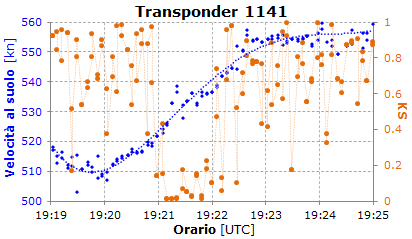
Questo grafico è relativo ad un aereo con transponder 1141 che scende verso sud lungo l'aerovia UA-14 al livello 330.
I valori di KS dalle 19:21 alle 19:22 sono simili a quelli dell'IH870 dalle 18:55 alle 18:57 circa.
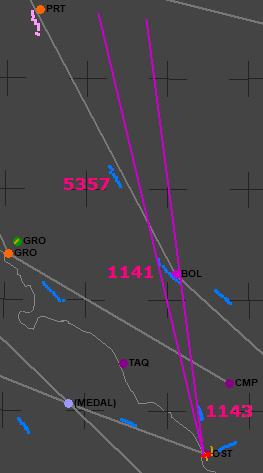
Questa è la situazione rilevata dall'estrattore 3 del radar Marconi durante il periodo dell'interferenza all'1141 (19:21 - 19:22).
I due segmenti viola hanno origine nell'antenna del Marconi e servono per individuare più facilmente il traffico che può interferire con l'1141.
Gli unici due aerei che possono interferire con l'1141 sono quelli con transponder 1143 e 5357.
L'1143 sta scendendo di quota da 4600 a 3100 ft (sta eseguendo l'avvicinamento finale per la pista 16L di Fiumicino sulla quale atterra alle 19:25).
La separazione azimutale rispetto all'antenna del radar Marconi tra questo aereo e l'1141 è pari a 5,37° alle 19:21:05 e sale a 7,28° alle 19:22:00.
Il 5357 sta andando verso Firenze al livello 350.
La separazione azimutale con l'1141 passa da 4,13° alle 19:21:05 a 9,15° alle 19:22:00.
Ora possiamo passare ad analizzare la situazione in cui si trova l'IH870.
Osservando il grafico "Velocità al suolo / KS" relativo all'IH870, l'inizio del periodo d'interferenza può essere fissato alle 18:55:36 e la fine alle 18:57:04.
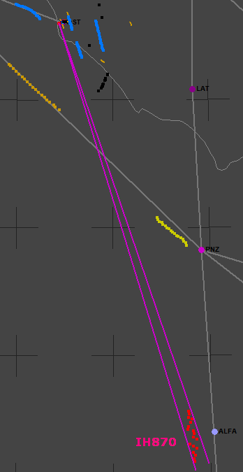
Questi sono i plot dalle 18:55:20 alle 18:57:04 ottenuti dall'estrattore 3 del radar Marconi.
Si nota che all'interno delle due linee viola (che formano un angolo ampio 1,33°) non è presente alcun traffico frapposto tra l'antenna del radar Marconi e il DC-9.
Nell'intervallo di tempo mostrato, è presente il seguente traffico:
due aerei in avvicinamento finale per la pista 34R di Fiumicino (transponder 1234 e 1134);
un aereo sotto vettoramento radar (transponder 0225) che sta arrivando sulla verticale di Pratica di Mare per virare a destra ed atterrare a Fiumicino;
un aereo da poco decollato dalla pista 25 con transponder 5355;
il famoso Air Malta KM153 (transponder 1235) che sta correndo all'impazzata verso la radioassistenza di Ponza a quasi 590 kn rispetto al suolo, grazie alla forte componente in coda del fortissimo vento presente ad alta quota (i radiosondaggi per Fiumicino indicano velocità del vento fino a 200 kn da ovest in alta quota);
volo Beatours KT881 (transponder 0226) in allontanamento da Ponza ad appena 375 kn rispetto al suolo (la velocità è così bassa, evidentemente, per il motivo inverso a quello del KM153);
alcuni plot di solo primario (colore nero).
Tutto questo traffico si trova ad un azimut dall'antenna del radar Marconi ben lontano da quello del DC-9 e la distanza angolare tra i plot relativi al DC-9 e quelli relativi agli altri aerei è sempre maggiore dell'ampiezza del fascio radar a -3 dB (che è pari a circa 2°).
In particolare:
i due voli 1134 e 1234 si trovano a più di 20° dal DC-9;
tra i plot di solo primario (colore nero), il più vicino al DC-9 è separato da 15,12°;
il KM153 ha una separazione minima di 16,7° dal DC-9;
il KT881 ha una separazione minima di 9,05°.
Quindi, la separazione azimutale minima tra l'IH870 e l'altro traffico (KT881) è circa doppia di quella rilevata per l'1141.
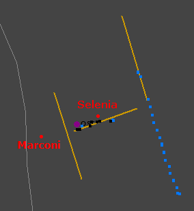
Una vista dettagliata del traffico presente a Fiumicino permette di escludere definitivamente qualunque tipo d'interferenza sui plot del radar Marconi, la cui antenna è completamente sgombra da traffico interferente.
Situazione diversa per il radar Selenia, che quindi non può essere utilizzato per quest'analisi.
Sembra, allora, perfettamente lecito dedurre che tutti gli aerei visibili al radar Marconi non possono interferire con i ritorni radar del DC-9, poiché la separazione azimutale è molto grande. Pertanto, la fonte d'interferenza con l'IH870 deve essere costituita da un aereo che non compare tra i plot presenti nei tabulati.
L'unica spiegazione plausibile sembrerebbe individuabile nella presenza di un piccolo aereo in coda (o quasi) al DC-9 a distanza tale da non essere né tanto vicino al DC-9 da rientrare nella sua cella radar né troppo distante da generare plot distinti da quelli del DC-9.
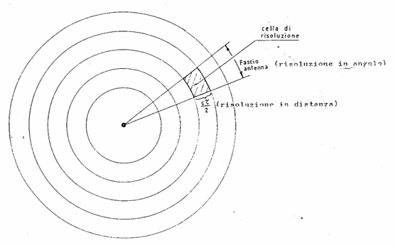
Arrivati a questo punto, è indispensabile quantificare le dimensioni della cella di risoluzione radar. Nessuno può farlo meglio degli stessi Giaccari e Pardini. A pag. 8 del documento già indicato, è riportata testualmente la definizione di cui abbiamo bisogno: "Si definisce convenzionalmente cella di risoluzione una figura spaziale costituita da un segmento di corona circolare (v. Fig.4 [riportata qui a sinistra, ndr]), la cui dimensione radiale è pari allo spazio corrispondente alla durata dell’impulso e la cui dimensione angolare è pari alla larghezza nominale del fascio d’antenna.".
La dimensione reale della cella di risoluzione, tuttavia, è ben maggiore della dimensione teorica ed è riportata a pag. 11 del PDF.
In definitiva, i periti riportano la dimensione reale della cella di risoluzione in distanza del radar Marconi in fig. 18 a pag. 13: 0,16 nm, pari a circa 300 m.
A pag. 19, infine, essi riportano un ulteriore dato utile per questo tipo di analisi: "Pertanto possiamo dire che per il radar Marconi (e non per il Selenia) la dimensione radiale, cioè lungo la distanza dal radar, della “zona di interferenza” tra due oggetti si allunga al valore di circa 1,09NM, indipendentemente della durata dell’impulso. Questo fenomeno deve essere attentamente considerato quando si hanno più detezioni “vicine” o comunque più oggetti, vicini, anche quando non diano luogo a detezioni separate.".
Unendo ciò che risulta dall'analisi presentata in questa pagina a ciò che viene affermato dai periti, otteniamo:
il KS troppo basso per escludere qualsiasi interferenza nei ritorni radar del DC-9 implica che un aereo si trova all'interno della "zona d'interferenza" del DC-9;
il KS troppo alto per affermare che un aereo è presente all'interno della stessa cella di risoluzione del DC-9 implica che un aereo si trova all'esterno della cella di risoluzione del DC-9.
Risulta, quindi, probabile la presenza di un piccolo aereo (verosimilmente un caccia) che dalle 18:55:36 alle 18:57:04 circa si trovava in coda al DC-9 ad una distanza che poteva essere compresa tra 400/500 m e 2 km. Dopo delle 18:57, questo piccolo aereo si è allontanato dal DC-9 in modalità tale da non ritornare alcun plot, ad esempio, abbassandosi di quota.
È importante sottolineare che l'orario si riferisce ad un intervallo di tempo in cui l'ipotetico caccia si trovava ad una quota tale da ritornare l'eco (seppur debole) all'antenna del radar. Se il caccia avesse seguito il DC-9 volando al di sotto dell'orizzonte radar, non avrebbe creato alcun tipo d'interferenza e il grafico "Velocità al suolo / KS" non avrebbe presentato anomalie sul KS.
Ad esempio, dal diagramma di copertura del radar Marconi S264H (quello che era presente a Fiumicino), per un'installazione di tipo flat site (come quella a Fiumicino) e per un bersaglio avente un'area equivalente pari a 10 m2, si ricava una quota minima di copertura a 90 nm dall'antenna pari a circa 11000 / 13000 ft. Ebbene, se l'ipotetico caccia avesse volato a quote intorno ai 10000 ft (ma, probabilmente, anche fino a 15000 ft, data la piccola area equivalente), non sarebbe stato possibile rilevare alcuna anomalia nei plot di ritorno dal DC-9.
È, quindi, evidente che il caccia può aver iniziato ad accompagnare il DC-9 molto prima delle 18:55, ma se lo ha fatto, volava sicuramente ad una quota molto inferiore a quella tenuta dal DC-9. Poi, passando dai dati oggettivi alle ipotesi, il caccia potrebbe essere salito di quota, ad esempio, per ricevere bene una comunicazione via radio da una stazione di terra. Oppure, tenendo presente che siamo proprio nell'orario in cui il DC-9 riporta il punto ALFA al controllore ("20.56.00 =IH870= E' SULL'ALFA LA 870"), è possibile che il caccia, sentendo il riporto di posizione, si sia alzato per verificarlo tramite il TACAN di Ponza (se il caccia era della NATO). Nel frattempo, siamo arrivati ad un paio di minuti dall'abbattimento e il caccia si allontana dal DC-9 ritornando sotto l'orizzonte radar, per poi, forse, comparire da un'altra parte.